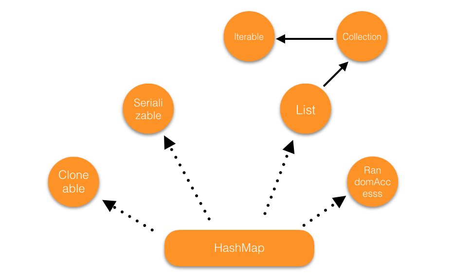

Java容器系列-CopyOnWriteArrayList源码解析
CopyOnWriteArrayList 是 ArrayList 的线程安全版本。用一句话概括它的特点就是：所有的修改操作都是基于副本来进行的。

设计思想
在 java.util.concurrent 下，有很多线程安全的容器，大致可以分成三类 Concurrent*、CopyOnWrite*、Blocking*这三类的容器都可以在并发环境下使用，但是实现的方式却不一样。
Concurrent* 容器是基于无锁技术实现，性能很好，ConcurrentHashMap 就是典型代表；CopyOnWrie* 容器则是基于拷贝来实现的，所以对于内存有很大的开销，CopyOnWriteArrayList 就属于这一类；Blocking* 容器则使用 锁技术实现了阻塞技术，在某些场景下非常有用。
CopyOnWriteArrayList 的核心操作如下，就是通过不断的拷贝数组来更新容器：
具体实现
CopyOnWriteArrayList 的成员变量如下：
1
2final transient Object lock = new Object();
private transient volatile Object[] array;
如何实现线程安全
和其他线程安全的容器思路不一样，这个容器从空间的角度来解决线程安全的问题。所有对容器的修改是基于副本进行的，修改的过程中也通过锁对象锁来保证并发安全，从这个角度来说，CopyOnWriteArrayList 的并发度也不会太高。所以一句话概括就是使用 synchronized + Array.copyOf 来实现线程安全。
迭代器是基于副本进行的，即使原数组被改变，副本也不会被影响。也就不会抛出 ConcurrentModificationException 异常。但是这样也会让最新的修改无法及时体现出来。
核心方法的实现
get 方法直接读取数组就行，不需要上锁，多个线程同时读也就不会有并发的问题产生。
1
2
3
4
5
6public E get(int index) {
return elementAt(getArray(), index);
}
static <E> E elementAt(Object[] a, int index) {
return (E) a[index];
}
下来来看一下 add 方法，代码很短：
1
2
3
4
5
6
7
8
9
10
11
12
13// CopyOnWriteArrayList.add()
public boolean add(E e) {
synchronized (lock) {
Object[] es = getArray();
int len = es.length;
// 复制原数组，并且长度加一
es = Arrays.copyOf(es, len + 1);
es[len] = e;
// 指向新的数组
setArray(es);
return true;
}
}
1
2
3
4
5
6
7
8
9
10
11
12
13
14
15
16
17
18
19
20
21
22
23// CopyOnWriteArrayList.remove()
public E remove(int index) {
synchronized (lock) {
Object[] es = getArray();
int len = es.length;
E oldValue = elementAt(es, index);
// 计算需要移动的元素
int numMoved = len - index - 1;
Object[] newElements;
// 如果删除的是最后一个元素，则不需要移动
if (numMoved == 0)
newElements = Arrays.copyOf(es, len - 1);
else {
newElements = new Object[len - 1];
// 删除的是中间元素，则需要分两次复制
System.arraycopy(es, 0, newElements, 0, index);
System.arraycopy(es, index + 1, newElements, index, numMoved);
}
// 指向新的数组
setArray(newElements);
return oldValue;
}
}
删除元素的情况就要复杂一些。删除的时候如果是删除中间的元素，需要后面元素进行移动。然后新数组的长度也会减 1，这就相当于缩容过程。
CopyOnWriteArrayList 的迭代器的实现也很不复杂:
1
2
3
4
5
6# COWIterator 构造函数
COWIterator(Object[] es, int initialCursor) {
cursor = initialCursor;
// 容器元素的副本
snapshot = es;
}
在 CopyOnWriteArrayList 中，有两种数组拷贝方式 Arrays.copyOf 和 System.arraycopy。这两种方式有什么区别吗？实际上是没有的，来看一下 Arrays.copyOf 的源码:
1
2
3
4
5
6
7
8public static <T,U> T[] copyOf(U[] original, int newLength, Class<? extends T[]> newType) {
T[] copy = ((Object)newType == (Object)Object[].class)
? (T[]) new Object[newLength]
: (T[]) Array.newInstance(newType.getComponentType(), newLength);
System.arraycopy(original, 0, copy, 0,
Math.min(original.length, newLength));
return copy;
}
没错，Arrays.copyOf 调用了 System.arraycopy 来实现数组拷贝。
通过上面的分析可知，CopyOnWriteArrayList 的读效率很高，但是写的效率很低，所以比较适合读多写少的场景。
另外需要说一句，CopyOnWriteArraySet 使用 CopyOnWriteArrayList 实现。Set 一如继往喜欢使用现成的类来实现。